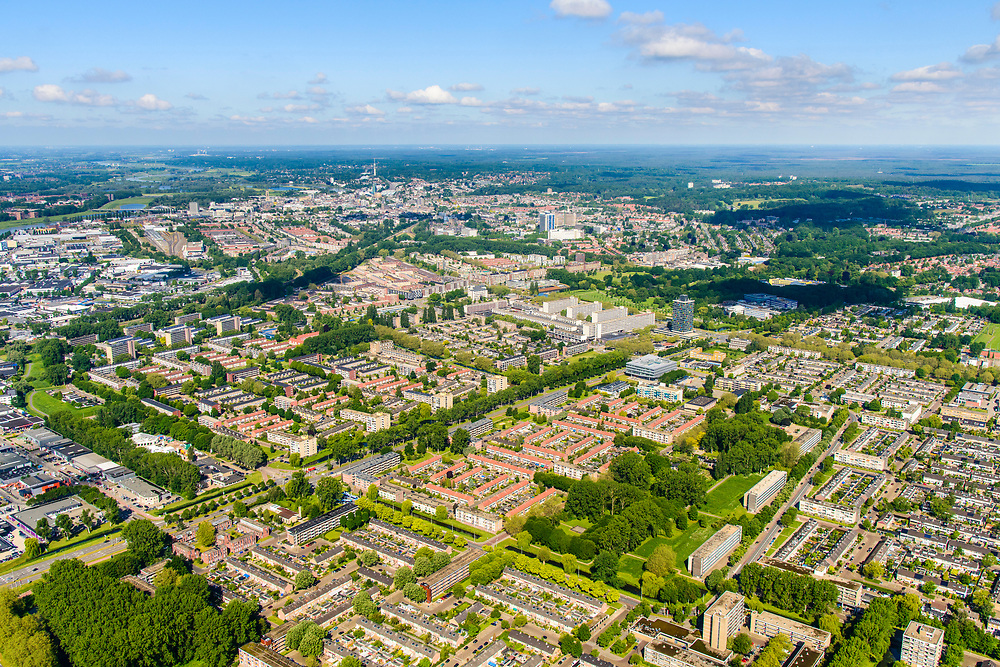

Thijs van der Klein
Dichtheid van een verstedelijkte omgeving
Met de dichtheid van verstedelijkt gebied bedoelen we de maatstaaf in hoeveel mensen er per vierkante kilometer wonen. Hiermee bepalen we de dichtheid van het verstedelijkt gebied en kunnen we een schatting maken van de mogelijke slachtoffers bij een
aardbeving.
Een kenmerkende overeenkomst tussen verschillende, bekende, aardbevingen in de wereld zijn de slachtsoffers die elke beving veroorzaakt. Het grote verschil in het aantal dodelijke slachtsoffers ligt vaak niet aan de kracht van de beving, maar waar het
plaats vind en hoeveel mensen er in de buurt van de beving zijn. Ofwel hoe groter de dichtheid van een verstedelijkte omgeving, hoe groter het aantal slachtoffers? In theorie zou dit kloppen.
Voorbeeld hiervan is een redelijk recente beving op 12 januari 2010, in Haïti. Hierbij kwamen naar schatting 250 duizend mensen om het leven (isgeschiedenis.nl, sd).
Haïti werd al voor deze beving gezien tot de minst ontwikkelde landen van de wereld, het overgrote deel van de bevolking, 86%, woont in de hoofdstad. De gemiddelde dichtheid van aantal personen per vierkante kilometer is 398,8 personen
per vierkante kilometer (nl.wikipedia.org, 2022). In krottenwijken en achterstandsbuurten waar de huizen dicht op elkaar zijn gebouwd en meestal
bestaat uit gevonden materialen en spullen, geen stevige huizen. Hierdoor was er vrij weinig nodig om de gehele gemeenschap te ontwrichten, overal waren tekorten: aan water, medicijnen, voedsel maar vooral onderdak. Wereldwijd werden
en steunacties opgetuigd, en werd er in totaal, naast alle gestuurde goederen, voor bijna 111 miljoen euro aan donaties binnen. Helaas wonen er, na vier jaar, nog steeds 150 duizend Haïtianen in huizen, die eigenlijk geen huizen genoemd
mogen worden, zij lopen dus alsnog risico bij een volgende beving (isgeschiedenis.nl, sd).
Afbeelding 1
Aardbevingsschade Haïti 12 januari 2010
Bij de grootste beving die ooit is gemeten, die in Chili in 1960. Door de beving zelf kwamen in totaal 1655 mensen, de tsunami, veroorzaakt door de aardbeving, doodden in verschillende landen ook nog tientallen mensen, het meeste in Japan waar 140 mensen
om kwamen. In vergelijking met de eerdere beving in Haïti, viel deze dus veel meer mee, en dat terwijl deze beving zwaarder was dan de andere beving zo’n 50 jaar later (belowzerofatfreezingclinic.nl, 2020).
Chili heeft een gemiddelde dichtheid van 24,1 personen per vierkante kilometer (nl.wikipedia.org, 2022). Hiermee kunnen we dus stellen dichtheid
zeker een invloed heeft op het aantal slachtoffers.
Manieren van bouwen
De manier van bouwen is per land verschillend en wordt meestal beïnvloed door zijn historische verleden. Italië heeft een heel rijk verleden, zoals gedurende een periode van grofweg 800 jaar waarin de Romeinen over de wereld heersten en hun moderne manier
van bouwen over grote delen van Europa verspreide (examenoverzicht.nl, sd). Of de Renaissance die begon in Italië en grote
menselijke, maar ook bouwkundige, gevolgen met zich meebracht (historiek.net, 2020). Of de stad Amsterdam die onder invloed van de nieuwe Amsterdamse
School grote hervormingen meemaakte in de manier van bouwen en de manier van leven (amsterdamse-school.nl, 2014). Dit waren allemaal factoren
die de bouwstijl of de manier van bouwen beïnvloede gedurende de geschiedenis.
Aardbevingen zijn niets nieuws, al sinds de mens waarnemingen op papier schrijft worden er aardbevingen teruggevonden. Deze aardbevingen werden toen verklaard doormiddel van hun goden, een aardbeving werd gezien als straf voor de aardbewoners, in praktijk
blijkt achter een aardbeving een natuurlijke verklaring te liggen. Toch is de manier van bouwen niet veranderd gedurende de tijd. We bouwen al meer dan honderd jaar op dezelfde manier huizen. In de details zijn er weliswaar grote stappen
gemaakt, sterkere funderingen, betere isolatie, betere manier van bouwen. Maar het uiterlijk, 4 muren en een dak, is eigenlijk nooit veranderd.
Ook het verschil in klassen in de maatschappij en waarin deze klassen leven is niet veranderd over de tijd. Nog steeds leven veel mensen in krotten wijken, ongeveer 900 miljoenen mensen. Dus 1 op de 6 personen leeft in een krottenwijk
(Well & de Weerd, sd). In Nederland kennen we geen sloppenwijken, wel kent Nederland zogenaamde achterstandswijken. Wijken waarin de bevolking
grotendeels in sociaaleconomische zwakke positie verkeert; lage inkomens, veel uitkeringen, veel etnische minderheidsgroepen; en waarin veel overlast en onveiligheid voorkomt (betekenis-definitie.nl, 2015).
Afbeelding 2
Sloppenwijken zijn nog steeds voor veel mensen hun thuis
Ondanks de vaak slechtere kwaliteit van huizen in zogenaamde achterstands- of aandacht wijken, zijn de huizen van betere kwaliteit dan de huizen in veel krotten- en sloppenwijken. De zogenaamde huizen in sloppenwijken bestaat vaak uit bij elkaar gevonden
materialen, vaak is dit bouwafval en restmaterialen. Vaak zijn er ook weinig tot geen faciliteiten zoals een ziekenhuis, politiebureau en zijn de wegen slecht. Daarnaast leven er vaak tientallen mensen boven en onder elkaar en is het
niet duidelijk bij de autoriteiten hoeveel personen huisvesting hebben genomen in zogenaamde sloppenwijken.
Wat we dus ook kunnen stellen is dat de manier van bouwen enorme invloed heeft op de overlevingskansen voor bewoners. Daarnaast is er weinig voor nodig om een krottenwijk omver te blazen, het is daarom ook niet gek dat in krottenwijken gedurende een aardbeving
meestal de meeste doden en gewonden vallen omdat de meeste huizen niet bestand zijn tegen de kracht van de beving.
Typen huizen
Door de reeds groeiende wereldbevolking, naar schatting leven we in 2010 met ruim 9.7 miljard mensen op onze planeet (Lammerse, 2019), volgens
diezelfde organisatie zal in 2050 68 procent van de bevolking in stedelijk gebied wonen, volgens het onderzoek zullen de megasteden, steden met meer dan 10 miljoen inwoners, van 33 naar 43 groeien tussen nu en 2030 (gebiedsontwikkeling.nu, 2018). Om al deze mensen te kunnen huisvesten moeten de steden uitbouwen, en snel. Een van de oplossingen is de hoogte in, dit zie je nu al in veel
megasteden. Zoals in New York, de welbekende skyline kent bijna alleen maar hoogbouw.
In Nederland kennen we geen megasteden, toch kan Nederland zich in de toekomst niet langer vasthouden aan de typische bouwstijl, van rijtjeswoningen. Makkelijk in te delen, verdeeld in rechte lijnen, strookje groen, af en toe een boom en natuurlijk voldoende
parkeergelegenheid, zal onherroepelijk over moeten gaan in zekere hoogbouw, willen we de groeiende bevolking kunnen blijven huisvesten.

Afbeelding 3
De 'typisch' Nederlandse woonwijk inrichting
Maar diezelfde groeiende bevolking zal ook een klimaatvoetprint hebben en hiermee het milieu laten verslechteren, de gevolgen zijn nu al te zien, extreme droogte of juist dagenlang regen. Ook de temperatuurverschillen worden extremer, zoals afgelopen
zomer hittegolf na hittegolf of juist zeer recent de -70 graden in Volkel (rtlnieuws.nl, 2022). Ondanks dat het later ging
om een foutieve meting bij het meetstation, was het uitzonderlijk koud in Nederland. Ook waar Nederland bekent om staat, de continue regenbuien worden extremer. Het aantal meldingen van overlast door deze buien is in de afgelopen 3
jaar met 77 procent toegenomen. Mede door schade aan woningen maar ook aan infrastructuur (Aa, 2022), en dit is nog maar het begin.
Door het extremere weer, maar ook door de verslechterde wereldsituatie, is er grote onzekerheid ontstaat op de wereldmarkt. Nu de Europese Unie als tegen reactie op de Russische inval in Oekraïne heeft besloten om spoedig geen gas meer af te nemen bij
Rusland, komen de Europese landen in de knel. Want geen enkel land heeft een voorraad genoeg om mens en industrie gedurende winter te kunnen voorzien. Nederland is een van de weinige landen die wel in bezit is van een aardig gasveld,
alleen werken bij ons de belangen tegen het meer oppompen van gas, namelijk na het besluit van minister Wiebes om de gaskraan compleet dicht te draaien in midden 2022 (Rijksoverheid.nl, 2020).
UPDATE:
Op het moment van schrijven was de gaswinning in Groningen nog niet gestopt, tegenwoordig is de gaswinning reeds gestopt.
Totdat de gaskraan compleet dicht gaat blijft Groningen een risico gebied voor aardbevingen en blijven hierbij de huizen beschadigt raken. Om ook de toekomstige generaties te kunnen blijven voorzien van woningen zal er ook in Groningen moeten worden bijgebouwd.
Dit moeten huizen zijn die bestendig zijn tegen de ruigere omstandigheden die in de nabije toekomst een rol gaan spelen, maar nog belangrijker moeten deze tegen een aardbeving kunnen.
Het risico van hoogbouw, is de kwetsbaarheid. Een rijtjes woning is vergelijken met zijn hoogte vrij vierkant, hierdoor kunnen de krachten gemakkelijk worden doorgegeven via de muren naar beneden de grond in. Daarnaast hebben de lagere huizen een stuk
minder last van harde rukwinden, omdat rijtjes woningen meestal in formatie worden gebouwd. Hierdoor heeft de wind minder vrij spel om langs de huizen te gieren. Bij flats, die in vergelijking met huizen veel hoger zijn, heb je daar
veel meer last van. Verder is aardbevingsschade bij rijtjeswoningen bijna nooit helemaal destructief, een huis kan namelijk gemakkelijk de klap opvangen. Dit komt doordat de massa van een rijtjeshuis veel kleiner is dan die van een
flat. Dus als bij de flat de fundering beschadigt raakt is er een veel groter probleem, omdat er veel grotere massa dan duwt op de zwakkere gedeelten van de fundering, hierdoor een geheel gebouw onveilig makend.
Afbeelding 4
Beschadiging aan een flatgebouw
Ondanks de vaak slechtere kwaliteit van huizen in zogenaamde achterstands- of aandacht wijken, zijn de huizen van betere kwaliteit dan de huizen in veel krotten- en sloppenwijken. De zogenaamde huizen in sloppenwijken bestaat vaak uit bij elkaar gevonden
materialen, vaak is dit bouwafval en restmaterialen. Vaak zijn er ook weinig tot geen faciliteiten zoals een ziekenhuis, politiebureau en zijn de wegen slecht. Daarnaast leven er vaak tientallen mensen boven en onder elkaar en is het
niet duidelijk bij de autoriteiten hoeveel personen huisvesting hebben genomen in zogenaamde sloppenwijken.
Tenslotte is de verhouding bij hoogbouw in het nadeel voor de constructie, de hoogte is veel groter dan de breedte. Visualiserend, een rechthoekig blokje is veel gemakkelijk om te krijgen dan een vierkant blokje. Er is dus ook veel minder kracht nodig
om een flatgebouw om te krijgen dan om een rijtjeshuis om te krijgen. Verder heeft een flatgebouw ook een veel groter oppervlak waar schade kan ontstaan. Bovendien heeft een flatgebouw een veel groter slachtoffer ratio dan een rijtjeshuis
als het fout gaat.
Aantal huishoudens per gebouw
In het ergste scenario waarbij een gebouw als gevolg van een aardbeving instort, hangt het aantal slachtoffers onder andere af van de hoeveelheid mensen die tijdens of vlak na de beving bij het desbetreffende gebouw bevinden. In Indonesië wonen er gemiddeld
28 mensen per woning, dus als daar een woning instort, heb je 28 mogelijke slachtoffers, terwijl als een rijtjeswoning in Nederland zou instorten heb je gemiddeld kans op 2.3 persoon dat slachtoffer zou kunnen worden. Het risico op
mogelijke slachtoffers bij een aardbeving neemt dus toe naarmate er meer mensen op een kluitje wonen, hierdoor zijn krottenwijken die op een breuklijn liggen enorm gevaarlijk om in te wonen. Naast de vele andere gevaren van het wonen
in krotten wijken loopt dus eigenlijk 1 op 6 mensen gevaar.